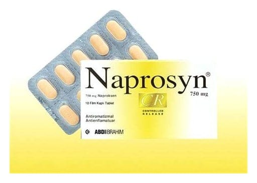

Naprosyn CR 750 mg Uzatılmış Salımlı Tablet, 10 Adet

Ne için kullanılır
KT · Bölüm 1© »* NAPROSYN CR, şeftali renginde, kapsül şeklinde tablet olan 10 ve 30 tabletlik blister ambalajlarda sunulur. e NAPROSYN CR, ağrı ve iltihaba etkili (N SAİ) ilaçlar grubundan ağrı kesici etkiye sahip bir ilaçtır. NAPROSYN CE; e Travma veya diğer durumlara bağlı olarak ortaya çıkan eklem kıkırdağının harabiyeti, ağrı ve fonksiyon kaybıyla karakterize eklem iltihabı, e El ve ayak eklemlerinde gelişen ağrılı eklem iltihabı, e Özellikle omurgada gelişen romatoid artrit benzeri bir hastalık olan ankilozan spondilit, e Proteinin parçalanmasındaki bir soruna bağlı olarak bağ dokusu ve eklem kıkırdağında gözlenen şiddetli ağrı (akut gut) gibi romatizmal hastalıkların tedavisinde iltihap giderici ve ağrı kesici olarak, e Akut kas iskelet (kemik) sistemi ağrılarında e Kadınlarda adet sancılarına bağlı ağrılarda ağrıyı kesmek amacıyla, e Ortopedik ve cerrahi ameliyatlarda ağrı kesici olarak, kullanılır.